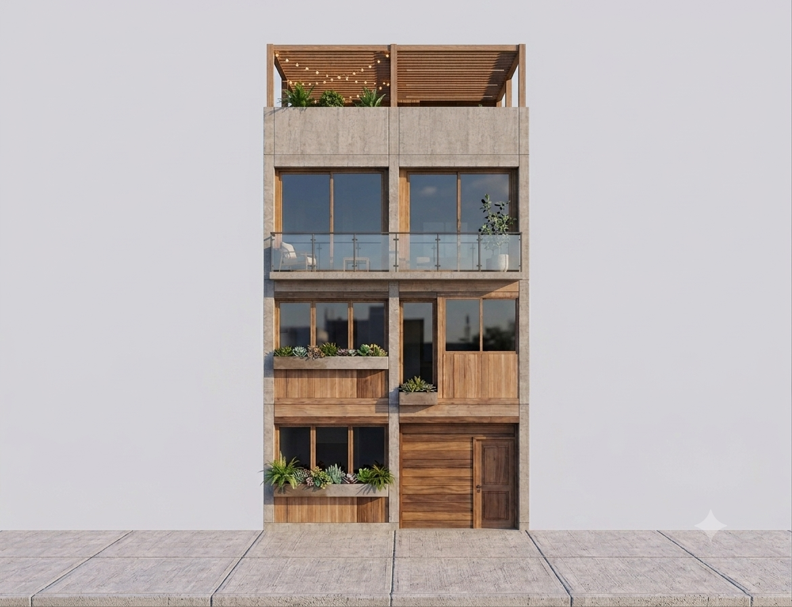
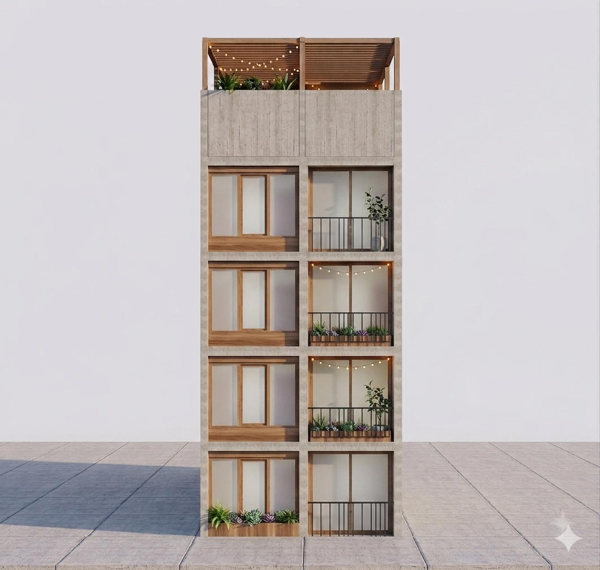

Proyecto de Renovación y Desarrollo Arquitectónico
Manizales · Caldas · Colombia
Un proyecto que transforma una vivienda existente en un desarrollo arquitectónico que integra vivienda familiar y residencias universitarias mediante espacios contemporáneos, funcionales y pensados para el futuro.
Explorar ProyectoForenzia nace de la renovación de una vivienda ubicada en Manizales, Caldas, transformándola en un proyecto arquitectónico capaz de combinar espacios privados para una familia con unidades residenciales destinadas al alquiler para estudiantes universitarios.
La propuesta busca aprovechar al máximo el terreno, incorporando un lenguaje arquitectónico contemporáneo donde el concreto expuesto, la madera natural, el vidrio y la vegetación se convierten en los principales protagonistas.
Recorra virtualmente cada nivel de la vivienda principal del proyecto.

Diseñado para estudiantes universitarios, este edificio ofrece espacios modernos, funcionales y confortables, distribuidos en cuatro niveles independientes.
Planos, modelos, documentación técnica y archivos digitales del proyecto Forenzia.
Abrir Google Drive